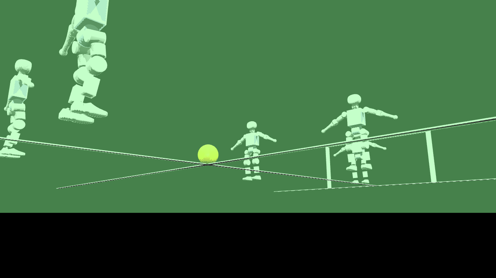

Multi-Robot Humanoid Fleet — Booster K1
ROS 2 Jazzy workspace for the 22-DoF K1: namespaced fleet across Gazebo, MuJoCo, and Isaac Sim with SDK-style endpoints. Blind velocity locomotion policy (RSL-RL, teacher–student distillation), RoboCup 3v3 demo, ZED 2i stereo replica, SLURM/HPC training.